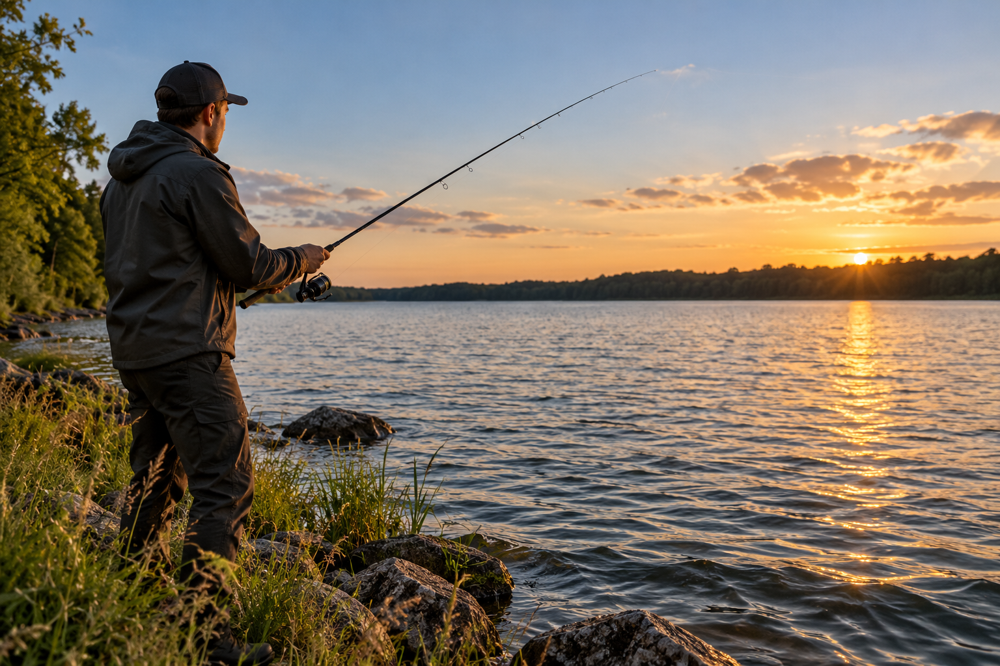

Spinnefiskeri
Spinnefiskeri er en af de mest begyndervenlige måder at fiske på. Metoden er meget ligetil og kræver ikke den store erfaring for at komme i gang.
Du kaster en kunstig agn, for eksempel et blink eller en spinner, ud i vandet og spinner den ind igen med fiskehjulet. Agnens bevægelser kan lokke fiskene til at hugge.
Det er en god metode for dig, der gerne vil være aktiv og prøve forskellige steder langs vandet.
